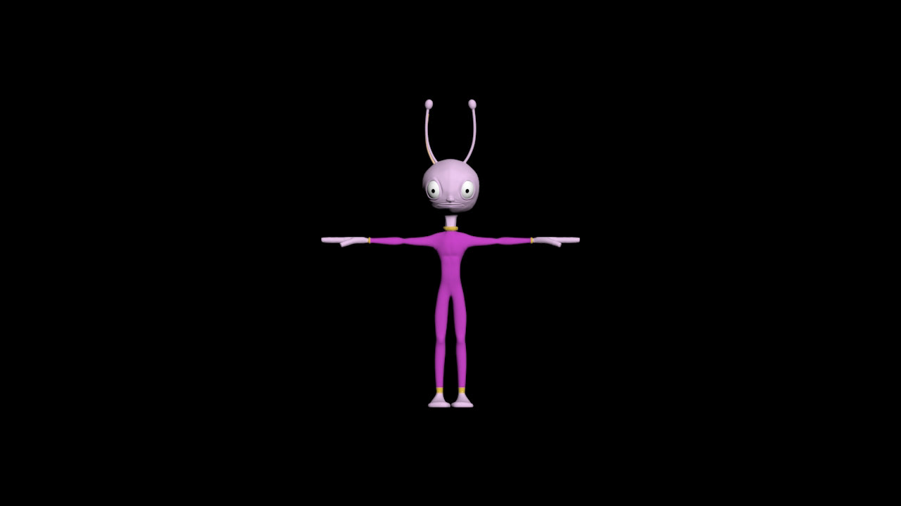
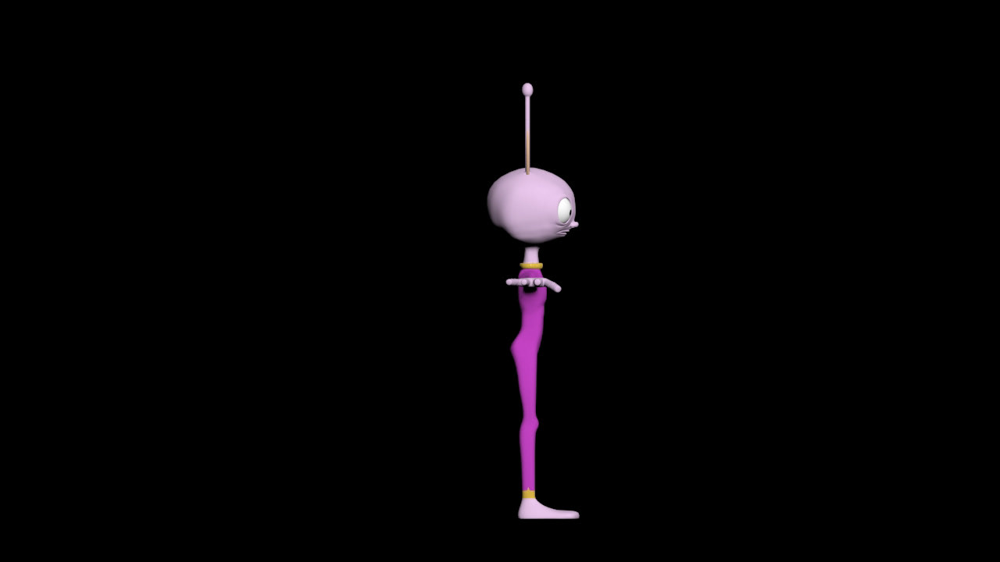
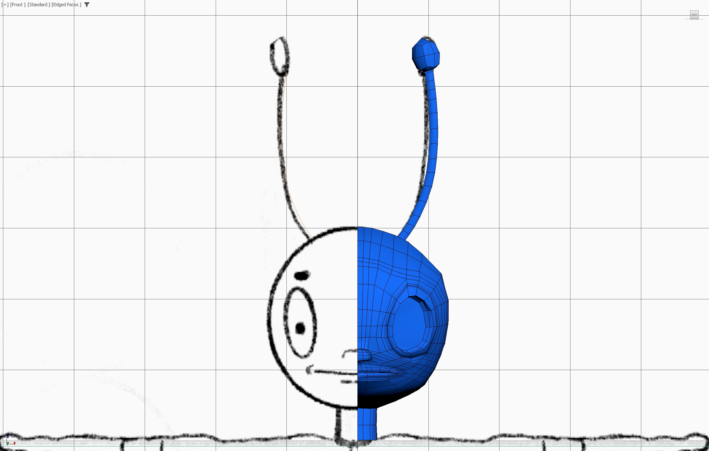
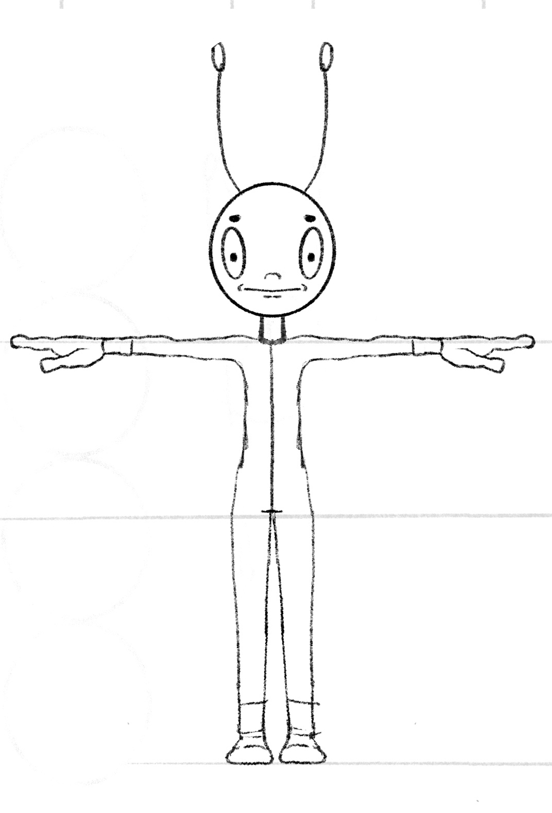

3D Artwork
3D Model: Frank
   Frank is an alien from many galaxies away, and he is on a mission to spread the art of dance. He travels the universe to gain more dance skills and challenge others in dance battles. My inspiration when creating him was El Chapulin Colorado, as well as ants, and the common alien designs such as the pizza planet aliens. I used 3Ds Max to create this 3d character model